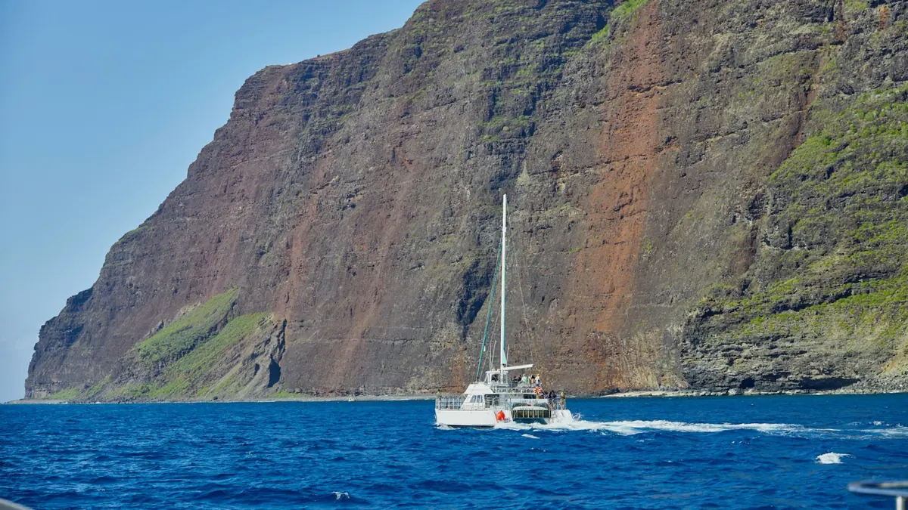

How to hire a videographer in Hawaiʻi for your tour company
What to ask a Hawaiʻi videographer before you book a shoot, why wedding filmmakers are the wrong fit for a tour, and what a good brief looks like.

Hire a videographer who has filmed a tour while it was running, ask them for a brief before they quote, and make sure the deliverables include reels cut for each platform, not just one long film. That is the short version. Here is the longer one, from someone who guided on Kauaʻi before filming here.
Most Hawaiʻi videographers shoot weddings
Search for a videographer on any island and the first page is wedding filmmakers, Yelp listings and Instagram accounts. There is nothing wrong with that work. It is just a different job. A wedding has one couple, a schedule, a planner and a day built around the camera. A tour has forty guests who did not come to be filmed, a captain who will not wait for a second take, and a window of light that closes at 9 a.m.
So the first question to ask is simple: have you filmed on a tour with paying guests on board? If the answer is a portfolio of ceremonies and real estate walkthroughs, keep looking. An adventure videographer should be able to show you footage shot on a moving boat, on a trail, in the water, with real guests, and tell you how they stayed out of the way to get it.
Ask for the brief before the quote
A good production company will not quote you from a text message. They will ask what you run, who books it, what you want guests to feel, and where the content is going to live. Then they write it down. The brief is where the shot list, the story idea, the schedule and the cast get agreed, and it is what makes the day on location calm instead of improvised.
If a videographer sends a price before asking any of that, you are buying a day of their time, not a film. For a tour operator the difference shows up months later, when you have four hours of footage and no reel that opens on the moment that sells the trip.
Decide what you actually need
Most operators we talk to need three things, in this order.
- Reels for Instagram, TikTok and YouTube Shorts, cut vertically, each one built around a single moment: the splash, the first view of the cliffs, the turtle, the face at the end of the line.
- A project film, 60 to 120 seconds, for the website, the booking page and paid campaigns.
- A photo set for the website, listings and ads, because the same shoot can cover stills if it is planned that way.
Ask for all three up front. A half-day shoot on one of your tours can deliver them if the brief is written for it. A single-day shoot adds a planned cast and a script. A multi-day production is for a larger story, a launch or several locations.
Check the practical things
A few questions sort out the professionals quickly.
- Who holds the drone license, and have they flown on this coast before? Aerial footage is part of many shoots where the location and the rules allow it, and the planning for it belongs in the brief.
- How do they handle talent releases? Anyone who appears in the work should have signed one, including your guides.
- What is the turnaround? Ask for a date for first edits, not a vague “a few weeks.”
- Who owns the footage, and where can you use it? This should be written into the agreement before anyone picks up a camera.
- Can they shoot during your busy hours without disrupting guests? The right answer involves joining a tour that is already running, with no heavy staging.
Why island knowledge matters more than gear
Every videographer in Hawaiʻi owns a good camera. Far fewer know that the trade winds pick up on the east side by late morning, that the light on the Nā Pali Coast is best from the water in the afternoon, or that a catamaran crew will give you the bow for ten minutes if you ask before the lines are cast, and never after. That knowledge is what turns a shoot into footage that looks like your island instead of footage that could be anywhere.
It is also why we built OutVenture around people who worked the tours first. We know where the moment happens because we have stood next to it with a radio on our hip.
Where to start
Tell us what you run and what you want guests to feel, and we will tell you how we would film it. There is one inquiry form and no pitch deck. If you are on Kauaʻi, start with the Kauaʻi videographer page. If you are on another island, the Hawaiʻi videographer page covers where we shoot and how it works.